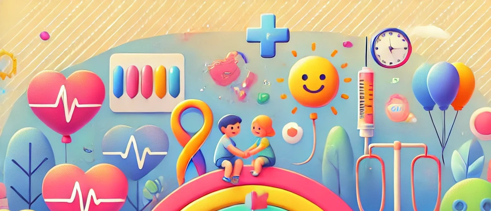
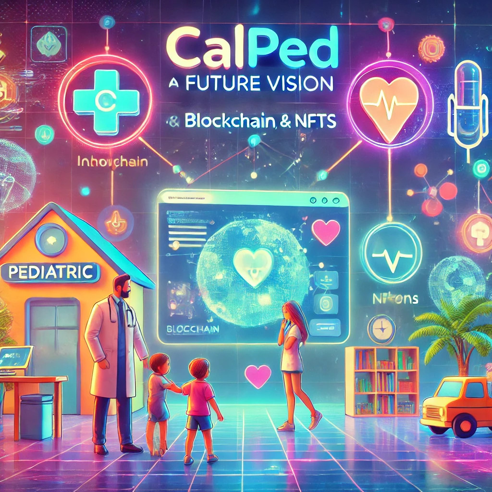

Nossa Missão
O CalPed é uma plataforma dedicada a melhorar o atendimento pediátrico através da inovação digital. Nossa missão é fornecer ferramentas de apoio eficientes e seguras para profissionais de saúde, facilitando diagnósticos precisos e tratamentos eficazes para crianças.
Tecnologia Avançada
Utilizamos a tecnologia blockchain para garantir a segurança e integridade dos dados médicos, proporcionando confiança e transparência no manejo de informações sensíveis. Além disso, oferecemos uma calculadora pediátrica de alta precisão para auxiliar em dosagens e diagnósticos.
Visão para o Futuro
Estamos comprometidos em expandir nossas funcionalidades, incluindo a implementação de tokens e NFTs para financiamento de projetos de saúde. Nossa visão é criar um ecossistema sustentável que apoie inovações contínuas em pediatria.
